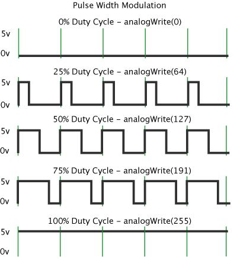

Des composants ou capteurs peuvent être branchés sur les connecteurs de la carte. Chaque composant a ses caractéristiques, nous prendrons le plus simple : une LED.
Brancher une LED :
- La patte la plus longue sur la broche 23 de l'ESP 32,
- La patte la plus courte sur une patte GND. Nous piloterons l'ESP32 afin qu'il envoie du courant, ou pas, sur la patte 23.
Pour gérer l'éclairage de la LED, nous avons 2 solutions :
- "Numérique" en mode "On/Off" en mettant la patte à HIGH ou LOW.
- "Analogique" en utilisant le PWM (Pulse Width Modulation) qui permet de "simuler" un courant analogique.

Dans cet exemple :
- La patte de la LED est configurée en mode OUTPUT : on va écrire l'état sur cette patte.
- Lors du setup nous faisons clignoter la LED en faisant un alternance de digitalWrite HIGH et LOW sur la patte de la LED
- Dans la boucle nous réalisons des boucles où nous incrémentons puis décrémentons le niveau de "puissance" que nous voulons sur la patte. Ainsi on a l'impression que l'intensité lumineuse augmente puis diminue.
Fichier MyLED.h
 1.9.6
1.9.6